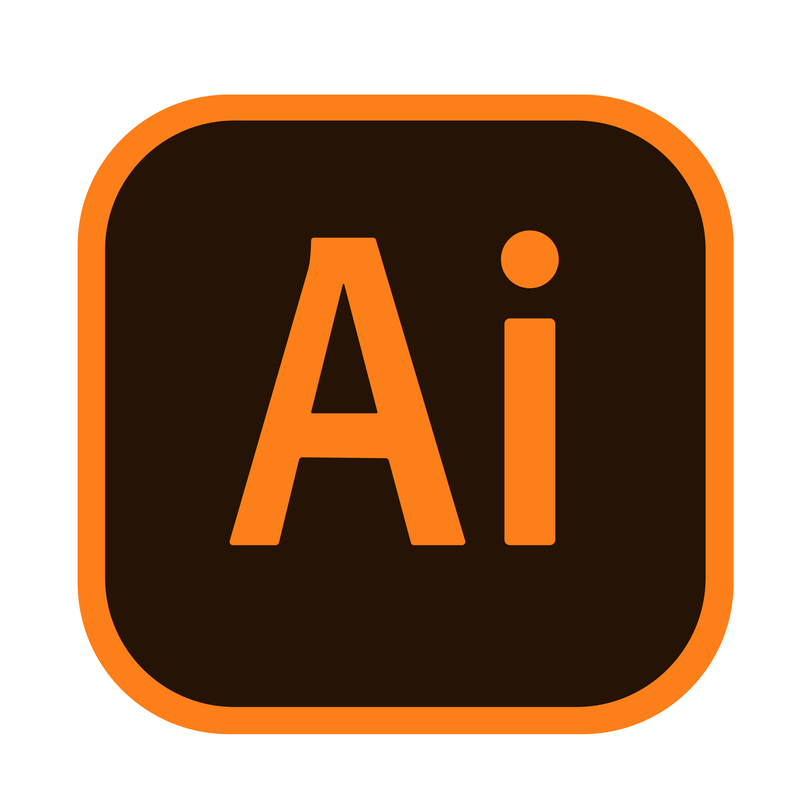
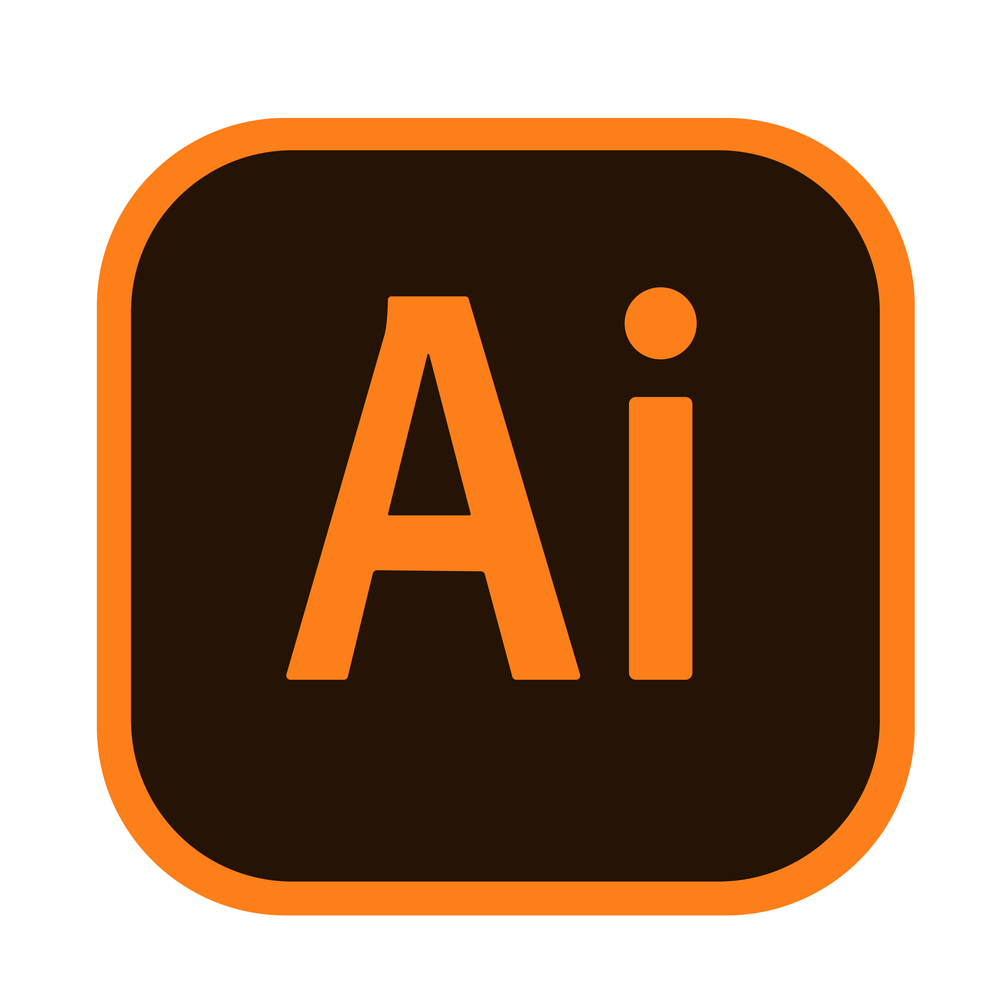
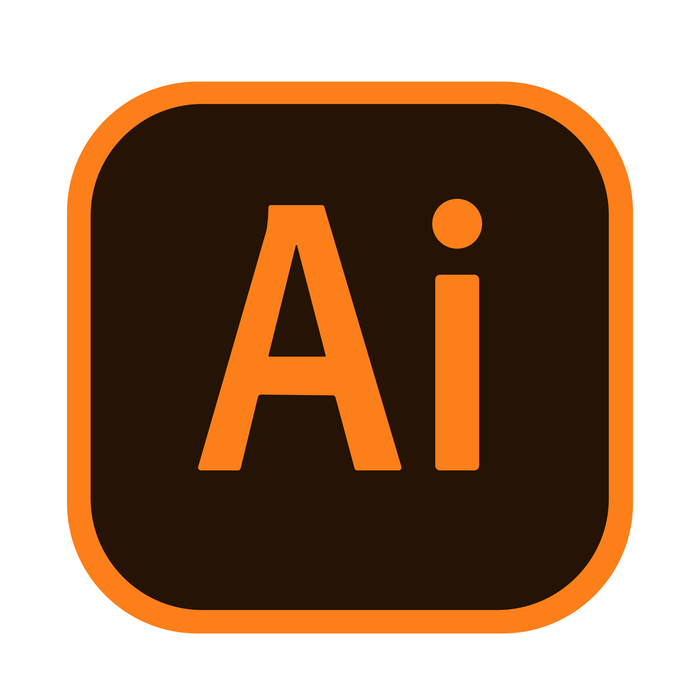

Hola Amanda, espero que te gusten mis regalos, sé que una página web no es para nada un buen
regalo, quiero decirte que hice lo que pude para que parezca profesional o decente al menos,
es un regalo para ti y todo lo que veas en la página este hecho completamente por mí, todo el
código lo escribí yo y todo lo que este en la página como imágenes o demás fue hecho por mi parte,
talvez algunas imágenes PNG no, pero estan sin Copyright así que no te preocupes.
Toda la página web la hice para conmemorar que al fin tienes todos los CD's de Paramore, cada
segmento de la página está hecho con los colores y motivos de los discos, intente hacerlo lo
mejor que pude, además de que en vez de las cartas típicas, va todo escrito y detallado en cada
página, espero que no te canses demasiado de la vista leyendo tanto en tu monitor, espero de corazón
que te guste, me tomo muchas horas hacerlo pero valió la pena cada segundo, no solo mejore mis
habilidades, si no que una vez más, mejoraron gracias a ti, y por eso Te Quiero Muchísimo Amanda,
eres realmente el mundo para mí y espero poder estar contigo siempre, siempre y cuando,
tú me lo permitas.

Esas fueron las tecnologías que utilice, HTML5, CCS3, Visual Studio Code, GitHub, Adobe Photoshop
e Illustrator respectivamente, sé que no es nada asombroso y sé que no conoces ninguna de ellas o
sabes algo acerca de alguna, pero de igual forma quería decirte que utilice muchas herramientas y
trabaje mucho en esta página, es un regalo hecho a mano si lo ves de esa forma, aunque claro,
preferiría que me dieras tu opinión de que tal quedo, ya que toda la página fue hecha específicamente
para ti. Tan solo espero que te guste y que te lo hayas pasado de lo mejor estas fiestas, sin duda
alguna eres lo mejor que tendré en mis fiestas, tan solo espero que mi yo del futuro que hablo
contigo no te haya echo enojar como siempre, Te Quiero Amanda, Felices Fiestas y disfruta de tus
regalos. (PD: Utilice un fondo blanco sin diseño ni nada porque es más fácil para que puedas leer
así, no tienes distracciones del fondo y las letras se ven nítidas y legibles, si ves las otras
páginas con fondos fijos es por lo mismo, pero intentare meterle más diseño para la próxima).


 
